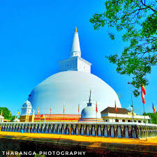
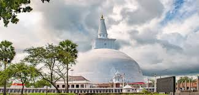
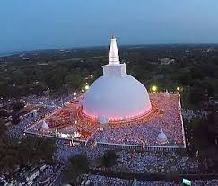

Ruwanwelisaya(Anuradhapura)
 
The Ruwanweli Maha Seya, also known as the Maha Thupa (lit. 'the Great Thupa'), is a stupa (a hemispherical structure containing relics) in Anuradhapura, Sri Lanka.
Two quarts or one Dona of the Buddha's relics are enshrined in the stupa, making it the largest collection of his relics anywhere.
It was built by Sinhalese King Dutugemunu in c. 140 B.C.,
who became king of Sri Lanka after a war in which the Chola King Elāra (Ellalan) was defeated. It is also known as Swarnamali Seya,
Svaṇṇamāli Mahaceti (in Pali) and Rathnamali Seya.
This is one of the "Solosmasthana" (the 16 places of veneration) and the "Atamasthana" (the 8 places of veneration).
The stupa is one of the world's tallest ancient monuments, standing at 103 m (338 ft) and with a circumference of 290 m (951 ft).
The original stupa had been about 55 m (180 ft) in height and was renovated by many kings. The Kaunghmudaw Pagoda in Sagaing, Myanmar is modelled after this stupa
The Mahavamsa contains a detailed account on the construction and the opening ceremony of the stupa.
The stupa was covered by wilderness as of the 19th century. After fund raising efforts by a bhikkhu, it was renovated in the early 20th century.
The Ruwanweli Seya Restoration Society was set up, most notably the philanthropist Hendrick Appuhamy,
donated Rs 20 million (1912 ) adjusted for inflation in 2021 it is worth 611 million US Dollars for the restoration works,
the foundation was founded in 1902 and the modern day crowning (a "crown" is a large gem placed at the very top of the stupa) was done on June 17, 1940,
and the final crowning of the stupa took place on November 26, 2019.
 Location (Ruwanwelisaya[Anuradhapura])